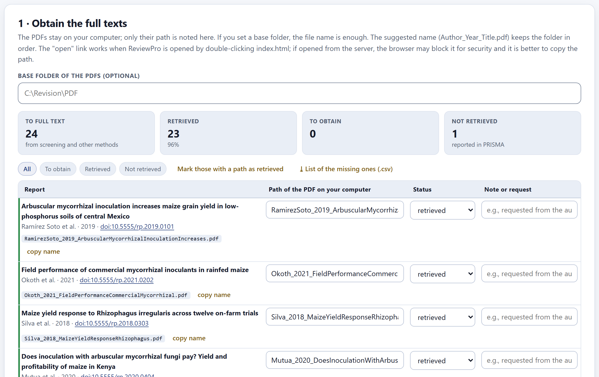
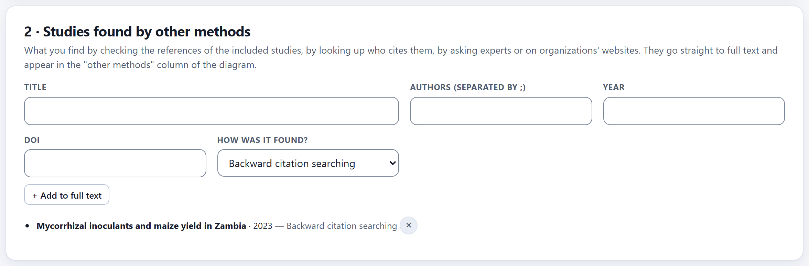
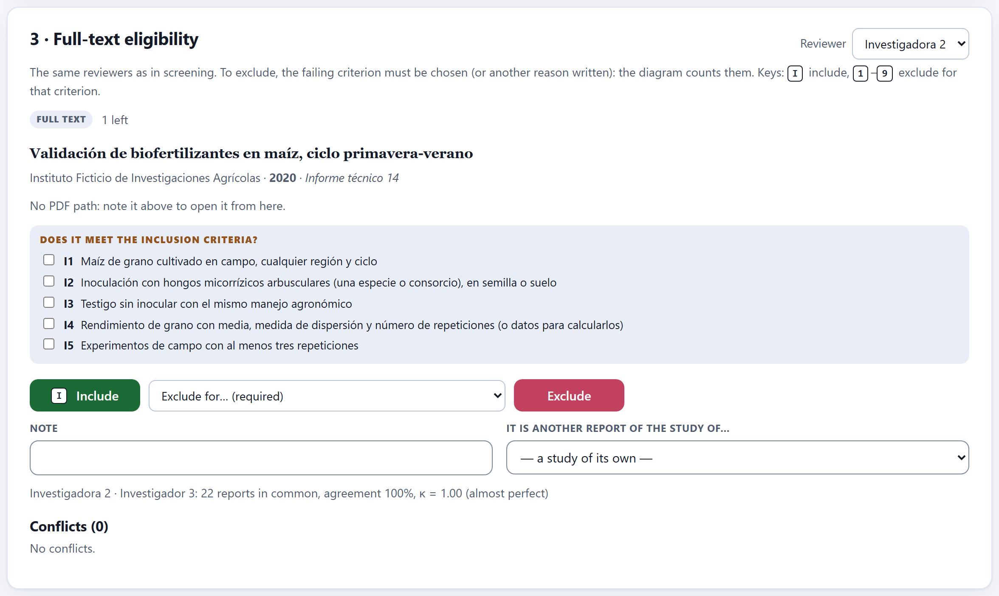
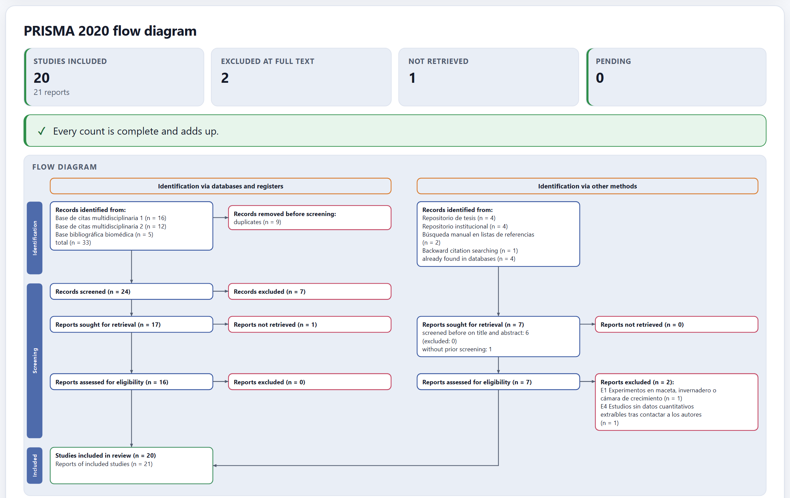

What passed screening is read in full. Here you obtain each report and record where its PDF is stored, add the studies found by other routes, decide the eligibility of each report with the reason for each exclusion, group the reports that describe the same study, and get the PRISMA 2020 flow diagram with the actual counts of the whole review.
The PDFs stay on your computer: the app neither stores nor reads them, it only records their path. That way the project remains a small file that can be shared, and each PDF stays wherever you keep it.

| Base folder of the PDFs | Optional. If you set it (for example, C:\Revision\PDF), the file name is enough for each report. |
| Suggested name | Author_Year_Title.pdf, with copy name: saving each PDF under that name keeps the folder tidy and lets the paths write themselves. |
| Status | to obtain, retrieved or not retrieved. Those not retrieved are reported in PRISMA as “reports not retrieved.” |
| Note or request | To keep track of the requests: “asked the authors on 03/03/2027; no reply.” |
| Mark those with a path as retrieved | Changes to retrieved every report that already has a path written. |
| ⤓ List of the missing ones (.csv) | Title, authors, year, journal, DOI, file name and note of those still missing: the list for the library or for writing to the authors. |
The open link works when the app is opened by double-clicking index.html. If you open it from the local server, the browser blocks links to files on disk for security reasons; in that case copy the path and open it from the file explorer.

What turns up when checking the references of the included studies, looking up who cites them, asking experts or browsing organizations’ websites comes in here, with its title, authors, year, DOI and the route: Backward citation searching, Forward citation searching, Contact with experts, Website or organization or Other route. These reports go straight to full text—they are not screened on title and abstract—and the diagram counts them in the other-methods column, with their route.

The reviewers are the same as in screening, and the Reviewer menu says who is assessing. For each retrieved report, the card shows the link to its PDF and the list of inclusion criteria with checkboxes: ticking them while you read makes it clear which one fails. Then you decide:
Below, the agreement between reviewers at full text (reports in common, percentage and kappa) and the conflicts, which are resolved as in screening.
The same experiment may be published in a thesis and later in an article, or in two articles that report different variables. PRISMA 2020 counts included studies and, separately, their reports. The It is another report of the study of… menu links a report to another one already included; the normal choice is — a study of its own —. Linked reports form a single study in extraction (Block 6), risk of bias (Block 7) and synthesis (Block 8): that way an experiment does not weigh twice in the meta-analysis.
Counting the same experiment twice—for example, the thesis and the article that came out of it—inflates the precision of the pooled effect and gives that experiment double weight. The clues: the same authors, the same site, the same years and identical means. When in doubt, write to the authors.
Of the 23 reports assessed, 2 were excluded (one greenhouse study, E1, and one without extractable data, E4) and 21 were included. Two of them describe the same field experiment, so they were linked: the review includes 20 studies in 21 reports.

The diagram is built automatically from the actual counts of Blocks 3, 4 and 5 and follows the PRISMA 2020 template with its two columns: identification via databases and registers and via other methods (Page et al. 2021). In a scoping review it is titled as a PRISMA-ScR diagram. Each box counts:
| Box | Where it comes from |
|---|---|
| Records identified | The records imported from each source (Block 3), according to the kind of their source; under other methods, also what was added in Section 5.2, with its route. |
| Removed before screening | The duplicates; in the other-methods column, “already found in databases.” |
| Records screened and excluded | The final decisions of Block 4, with the records left unread after the stopping rule, if any. |
| Reports sought and not retrieved | Section 5.1. |
| Assessed and excluded, with reasons | Section 5.3, one line per reason. |
| Studies and reports included | Section 5.4. |
At the top, four figures—studies included, excluded at full text, not retrieved and pending—and a check that everything adds up: “Every count is complete and adds up.”, or what is missing. The figure is exported as PNG, JPG or SVG with the ⤓ button in its corner, and ⤓ Diagram counts (.md) downloads the numbers in a table.
| If there are pending items | then the diagram is provisional: screening decisions, reports to obtain or assessments to do are missing, and the app says how many of each. |
| If the app warns that a route does not add up | then some record was left without a decision at some step; check that block. |
| If there are full-text exclusions without a reason | then give them one: PRISMA 2020 asks for it (item 16b). |
| If a record from a repository falls in the databases column | then check the kind of its source in Block 2 or in the Block 3 search log. |
“No record has passed screening yet (Block 4).”; “No PDF path: note it above to open it from here.”; “Choose the reason for exclusion”; “You assessed every retrieved report.”; and those of the diagram check: routes that do not add up, records without a final decision, reports neither obtained nor given up as lost, assessments pending or in conflict, and exclusions without a reason.